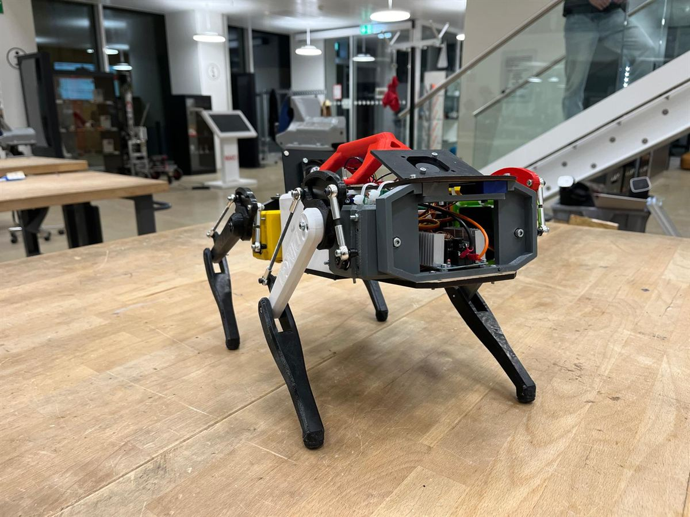

Overview
Mechatronics Engineer (Electronics Sub-team): Inherited a non-functional electronics system for the DINGO robot from previous members. Successfully troubleshot, corrected, and brought the hardware fully back in line with Stanford's original open-source specifications.
Project Leader: Promoted to lead the BARK project, overseeing the entire multidisciplinary team. Continuing and finishing the open-source project.
- Personal Contribution
- Project Difficulty
| Area | Personal Contribution | Project Difficulty |
|---|---|---|
| Mechanics | 7 | 6 |
| Electronics | 9 | 8 |
| Software | 3 | 2 |
Gallery
